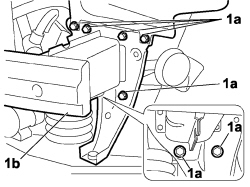

7210A18 R.R FRONT CROSSMEMBER
- Path
- Procedures > 72 PANELS AND FRAMES > 7210 REMOVING-REFITTING > 7210A structural elements (front part) > 7210A18 R.R FRONT CROSSMEMBER
- Kind
- repair procedure (removal / refitting; the operation number is the code)
- Applies to
- engines: 1.4 8v, 1.6 16v, 1.3 JTD 16V, 1.9 JTD 8V; all production periods
- Interactive page
- https://sloeber94.github.io/elrnDB-fDbl/en/#/223000224
Applies to: engines: 1.4 8v, 1.6 16v, 1.3 JTD 16V, 1.9 JTD 8V; production: da 12/03; only with equipment: MY 2005
 Removing
Removing
 Refitting
RefittingOp. 7055B08 GRILLE (ONE) ON FRONT BUMPER - R.R
Op. 7055B54 PROTECTION/GUARD UNDER ENGINE - R.R.
Op. 1088B32 ENGINE COOLING RADIATOR SUPPORT CROSSMEMBER - R.R.

Applies to: engines: 1.4 8v, 1.6 16v, 1.3 JTD 16V, 1.9 JTD 8V; production: da 12/03; only with equipment: MY 2005
Refitting
RemovingOp. 1088B32 ENGINE COOLING RADIATOR SUPPORT CROSSMEMBER - R.R.